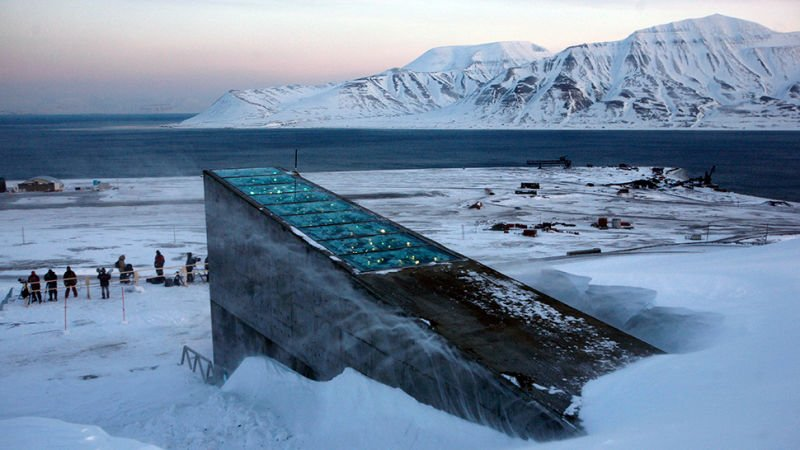
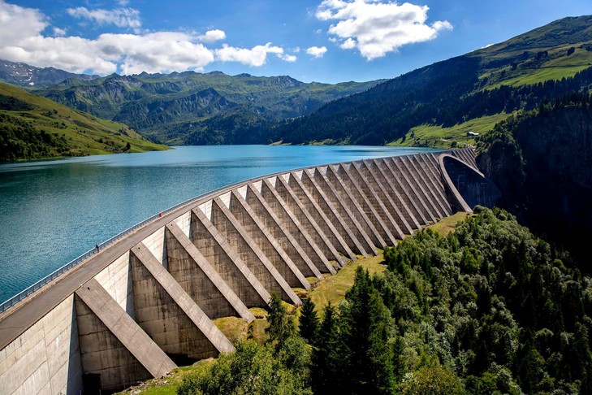

Pour limiter cette pollution numérique de nombreuses solutions peuvent être envisagées, et à toutes les échelles. Il existe par exemple des datas center situés dans des immeubles pour chauffer les appartements présents dans ces derniers. Ces initiatives sont de plus en plus courantes et cela permet de réutiliser l'air chaud généré par les datas centers. Il existe également des piscines chauffées grâce à ce même système.
Une autre solution pour rendre plus écologique ces datas center, c’est de les placer dans des pays froids. Par exemple de grandes firmes américaines ont pris cette initiative : Google a placé des serveurs en Finlande, grâce à la faible température extérieure ces derniers vont moins dégager de chaleur. Ils utilisent également l’eau de la mer, qui est logiquement très froide, pour les refroidir.
Il existe aussi des datas centers alimentés par énergie renouvelable. Comme nous l’avons vu certains pays utilisent encore des energies fossiles pour l’électricité, il est donc essentiel d’utiliser des énergies « propres » pour limiter la pollution. Par exemple à Châteauroux un projet a pour but de construire un data center alimenté par l’énergie solaire. Pour ce qui est de l’air chaud généré par ce dernier, il servira a chauffer des serres.
Au niveau national, les pays qui utilisent encore des energies fossiles pour fournir l’électricité comme l’Allemagne, la Chine et les États-Unis par exemple (qui, on le rappelle héberge plus d’un tiers des datas centers présents dans le monde) devraient utiliser des énergies moins émettrices de Co2 comme le nucléaire ou encore des énergies renouvelables.
Au niveau individuel, nous pouvons limiter notre (sur)utilisation des réseaux sociaux. En 2019, les français passaient en moyenne 2h12 par jour sur les réseaux sociaux.
À ce jour, 14 millions de français sont inscrits sur Instagram, de même pour son concurrent Snapchat.
Faites le test, allez dans la section « Temps d’écran » sur votre smartphone et regardez combien de temps vous passez par jour sur les réseaux sociaux. Pour essayer de limiter notre impact nous pouvons donc essayer de diminuer notre temps de consommation sur ces différentes applications. En plus de baisser son impact environnemental, vous allez gagner beaucoup de temps
Il est aussi preferable d’envoyer un message écrit plutôt qu’un message audio étant donné qu’un message audio est beaucoup plus lourd a envoyer et par conséquent demande davantage de ressources énergétiques. Nous pouvons également nous poser la question de l’utilité des vidéos et photos que nous envoyons et ainsi envoyer uniquement les photos essentielles.
Nous pouvons aussi informer notre entourage de cette pollution numérique peu connue car nous ne nous rendons pas forcément compte que, quand nous envoyons une photo par exemple, de nombreuses ressources énergétiques sont utilisées.